화공기사(구)(구) (2003-05-25 기출문제)
1과목: 화공열역학
1. 다음 그림은 카르노 사이클인데 T1에서 열을 받고 T2에서 열을 방출한다. 카르노 동력사이클의 순서는 다음 어느 것인가?
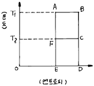
- A - B - C - D - E - F - A
- A - B - C - F - E - D - C
- A - B - C - F - A
- F - C - B - A - F
(정답률: 알수없음)

2. 압축 또는 팽창에 관해 옳게 설명된 것은? (단, 첨자 S는 등엔트로피를 의미)
- 압축기의 효율은 η = (Δ H)S /Δ H 로 나타낸다.
- 노즐에서 에너지 수지식은 WS = -Δ H 이다.
- 터빈에서 에너지 수지식은 WS = -∫ u du 이다.
- 조름공정에서 에너지 수지식은 dH = - u du 이다.
(정답률: 알수없음)
3. 열용량 Cp및 Cv의 값이 일정한 이상기체가 단열 가역적으로 팽창 또는 수축할 때 다음 중에서 옳은 것은?
- 일의 양은 반드시 0 이다.
- 열전달량은 반드시 0 이다.
- 내부 에너지의 변화는 0 이고 계에 열이 들어온다.
- 내부 에너지의 변화는 0 이고 계에서 열이 나간다.
(정답률: 알수없음)
4. 물과 수증기와 얼음이 공존하는 삼중점에서 자유도의 수는?
- 0
- 1
- 2
- 3
(정답률: 알수없음)
5. 질량이 500g인 기체 암모니아가 70℃의 항온조에 담겨있는 20000㎝3의 봄베속에 들어있다. 이상기체법칙에 의하여 봄베속의 압력을 계산하면 얼마인가?
- 40.4 bar
- 43.5 bar
- 41.9 bar
- 46.7 bar
(정답률: 알수없음)
6. 다음 중 열의 일당량은 어느 것인가?
- 427㎏ㆍm/㎉
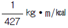
- 427㎉/㎏ㆍm
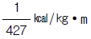
(정답률: 알수없음)
7.
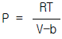
(단,b : 상수)로 표시되는 기체의 퓨가시티 계수,ø 는?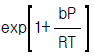
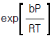
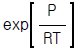
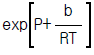
(정답률: 알수없음)
8. 액체로부터 증기로 바뀌는 정압 경로를 밟는 순수한 물질에 대한 G와 T의 그래프 중 옳게 표시된 것은? (단, G는 깁스 자유에너지이다.)
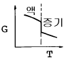
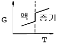
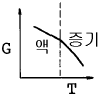
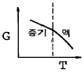
(정답률: 알수없음)
9. 1 mole의 이상기체가 1 기압 0℃ 에서 10 기압으로 압축 되었다. 다음 중 어느 과정을 경유하였을 때 압축 후의 온도가 가장 높겠는가?
- 등온 압축(isothermal)
- 등적 압축(isometric)
- 단열 압축(adiabatic)
- 비가역 압축(irreversible)
(정답률: 알수없음)
10. 물질의 기본적 성질에 대한 미분형 관계식을 표시하고 있다. 틀 린 것은?(오류 신고가 접수된 문제입니다. 반드시 정답과 해설을 확인하시기 바랍니다.)
- dU = TdS + PdV
- dH = TdS + VdP
- dA = -SdT - PdV
- dG = SdT + VdP
(정답률: 알수없음)
11. 어떤 화학반응의 평형정수의 온도에 대한 미분계수가 다음과 같이 표시된다. 이 반응에 대한 설명으로 옳은 것은?
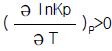
- 이 반응은 흡열반응이며, 온도상승에 따라 K의 값이 커진다.
- 이 반응은 흡열반응이며, 온도상승에 따라 K의 값은 작아진다.
- 이 반응은 발열반응이며, 온도상승에 따라 K의 값은 커진다.
- 이 반응은 발열반응이며, 온도상승에 따라 K의 값은 작아진다.
(정답률: 알수없음)
12. 낮은 압력의 실제 기체는 비리얼(virial)상태 방정식을 압력의 항으로 전개하면 다음과 같다. Z = 1 + B'P, 단 B'(T) 이러한 일정량의 기체를 등온가역 압축을 하면 한 일은 이상기체의 경우와 비교하면 어떻게 되는가?
- 같다.
- 크다.
- 작다.
- 비교할 수 없다.
(정답률: 알수없음)
13. 열과 일 사이의 에너지 보존의 원리를 표현한 법칙은?
- 보일 샤를의 법칙
- 열역학 제 1법칙
- 열역학 제 2법칙
- 열역학 제 3법칙
(정답률: 알수없음)
14. 용매에 소량의 기체가 녹아 있을 때 나타나는 퓨가시티를 구하고자 할 경우에 가장 적절한 방법은?
- Raoult's law를 이용한다.
- Henry's law를 이용한다.
- Nernst의 분배법칙을 이용한다.
- Vander Waals식을 이용한다.
(정답률: 알수없음)
15. 등온과정에서 이상기체의 초기 압력이 1atm, 최종압력이 10atm 이면 엔트로피 변화는?
- Δ S = RT
- Δ S = 2.303 RT
- Δ S = 4.606 RT
- Δ S = RTㆍln5
(정답률: 알수없음)
16. 다음 중 Joule - Thomson 계수(μ )에 대한 설명으로 옳은 것은?
 로 정의된다.
로 정의된다.- 고압에선 양의 값이다.
- 전환점에선 1이다.
- 이상기체에선 영이다.
(정답률: 알수없음)
17. 대기압하에 있는 SO2가스를 400℉로 부터 1600℉까지 흐름 과정으로 가열하려고 한다. SO2유속이 400lb/min일 때 열전달 속도는 몇 Btu/min인가? (단,Cp = 12.47 Btu/lb mole℉이다.)
- 93400
- 93525
- 98525
- 103400
(정답률: 알수없음)
18. 화학반응에서 정방향으로 자발적반응이 일어나는 경우는?
- Δ G > 0
- Δ G < 0
- Δ G = 0
- Δ G = Kc
(정답률: 알수없음)
19. Gibbs Duhem식이 다음 식으로 표시될 경우는? (단, Xi : i성분의 조성,
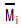
:ｉ성분의 부분몰특성)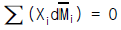
- 압력과 몰(㏖)수가 일정할 경우
- 몰(㏖)수와 온도가 일정할 경우
- 몰(㏖)수와 성분이 같을 경우
- 압력과 온도가 일정할 경우
(정답률: 알수없음)
20. 다음은 carnot cycle에 관한 설명이다. 틀 린 것은?
- 가역 사이클이다.
- 작업물질의 종류에 무관하다.
- 그 효율은 두 열원의 온도에만 의하여 결정된다.
- 비가역 열기관의 열효율은 가역기관의 열효율보다 클 수 있다.
(정답률: 알수없음)
2과목: 화학공업양론
21. 다음 중 SI 단위계로만 구성된 것은?
- cm, dyne, erg,
- ft, K㏖/m3, m2/s, cal
- lbm, Btu, Ω , ㎛2
- ㎏, N, ℃, sec
(정답률: 알수없음)
22. 1기압이 760mmHg인 것을 이용하여 kgf/㎝2 단위로 환산하면 얼마인가?
- 14.7
- 1.0336
- 29.92
- 1013
(정답률: 알수없음)
23. 질소에 벤젠이 10Vol%포함되어 있다. 온도 20℃,압력 740㎜Hg때 이 혼합물의 관계 포화도를 %로 구하면? (단,20℃에서 순수한 벤젠의 증기압은 80㎜Hg이다.)
- 10.8%
- 80.0%
- 92.5%
- 100.0%
(정답률: 알수없음)
24. 다음에서 자유도(F1 + F2)는 얼마인가?
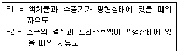
- 1
- 2
- 3
- 4
(정답률: 알수없음)
25. 0℃에서 100℃까지 산소의 평균 몰 열용량은 Cp = 6.987㎈/gmolㆍK 이다. 0℃부터 시작하여 몇 K가 되면 정용하에서의 산소의 엔트로피 증가가 1㎈/gmol K 만큼 증가하는가? (단, 산소는 이상기체로 가정한다.)
- 22.50 K
- 33.86 K
- 222.0 K
- 333.6 K
(정답률: 알수없음)
26. 30℃,760㎜Hg에서 공기중의 수증기압이 30㎜Hg이고,이 온도에서 포화 수증기압은 0.⑤33㎏/㎝2이다. 이 때 상대 습도는 얼마인가?
- 55.53%
- 65.54%
- 76.55%
- 85.56%
(정답률: 알수없음)
27. 질산 65%, 황산 5%, 물 30%로 이루어진 혼합산(A) 20 lb에 황산 60%, 질산 30%, 물 10%로 이루어진 혼합산(B) 30lb를 섞었을 때 최종 혼합산의 질산조성(%)은? (단, 혼합산의 직각 삼각도표는 우측에 나타나고 AB선분의 실측값이 4cm이다.)
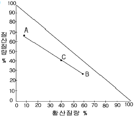
- 24
- 36
- 44
- 58
(정답률: 알수없음)
28. 다음과 같은 화학반응이 일어나고 있다.(표참조)feed의 molar flow rate는 100㎏-mole/hr이고 C2H4의 생산은 40.0㎏-mole/hr가 생산된다. CH4의 생산이 5.0㎏-mole/hr가 병행되고 있다면 methane에 대한 ethylene의 selectivity는 얼마인가?
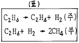
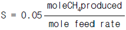
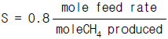
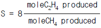
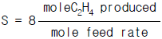
(정답률: 알수없음)
29. 표준상태에서 100L의 C2H6(g)를 완전히 액화한다면 몇 g의 C2H6(ℓ )이 되겠는가? (단, 이 C2H6 증기의 압축인자는 0.95이다.)
- 134g
- 141g
- 157g
- 163g
(정답률: 알수없음)
30. 이상기체 A의 정압열용량은 Cp =10 + 2×10-3T(J/mol℃)로 나타낸다. 이 때 이상기체 A의 2mol을 0℃에서 100℃까지 가열하는데 필요한 열량은 얼마인가?
- 1000 J
- 1010 J
- 2000 J
- 2020 J
(정답률: 알수없음)
31. 5%wt Na2SO4수용액에 Na2SO4ㆍ10H2O 1㎏을 첨가하여 30%wt Na2SO4수용액을 만들려고 한다. 5%Na2SO4수용액 얼마가 필요한가? (단,Na2SO4분자량 : 142, H2O분자량 : 18)
- 0.24㎏
- 0.56㎏
- 0.86㎏
- 결정못함
(정답률: 알수없음)
32. 지구상에서 70 kg중의 무게가 나가는 사람이 달 (중력가속도=4.9 m/s2)에서는 무게(kg중)가 얼마가 되는가?
- 70 kg중
- 140 kg중
- 17.5 kg중
- 35 kg중
(정답률: 알수없음)
33. 아래의 반응식을 이용하여
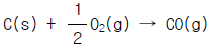
의 반응열을 계산하면 얼마인가?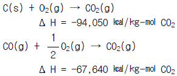
- -26,410 ㎉/㎏-㏖ CO
- 37,025 ㎉/㎏-㏖ CO
- -37,025 ㎉/㎏-㏖ CO
- 26,410 ㎉/㎏-㏖ CO
(정답률: 알수없음)
34. 실제기체에 대한 상태방정식으로 이용되고 있는 반데르발스 방정식(Van der Waal's equation)에서 상수 a와 b의 차원으로 모두 올바른 것은?
- a : atm ft3/1b mol, b = ft3/1b mol
- a : atm ft6/1b mol, b = ft3/1b mol
- a : ft6/1b mol, b = atm ft3/1b mol
- a : atm/1b mol, b = atm ft6/1b mol
(정답률: 알수없음)
35. 무게로 40%의 수분을 함유한 목재를 수분함량이 10%가 되도록 건조했다. 원목재 1㎏당 증발된 물의 양은?
- 113.3g
- 223.3g
- 333.3g
- 443.3g
(정답률: 알수없음)
36. 다음 중 온도 T 에서의 몰 기화열 Δ Hv에 대한 Clasius-Clapeyron 식의 변수 관계가 올바른 것은? (단, P*는 증기압, T는 절대온도, Vg와 Vt는 각각 기상과 액상의 몰 부피이다)
- dp*/dt = Δ Hv/[T(Vg - Vt)]
- dp*/dt = TΔ Hv/(Vg - Vt)
- dp*/dt = (Vg - Vt)/TΔ Hv
- dp*/dt = Δ Hv(Vg - Vt)/T
(정답률: 알수없음)
37. 0℃,1atm에서 22.4m3의 가스를 정압하에서 500㎉의 열을 가하였을때 이 가스의 온도는 몇℃가 되겠는가? (단,가스를 이상기체로 보고 정압평균분자 열용량은 6.5㎉/㎏㏖이다.)
- 57℃
- 67℃
- 77℃
- 87℃
(정답률: 알수없음)
38. 다음 3성분계 선도에서 R혼합물의 A성분의 조성을 잘못 표시한 것은? (단,AG = DN)
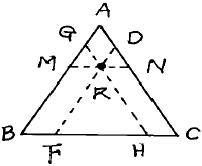
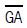
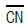
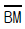
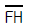
(정답률: 알수없음)
39. 자유도의 설명중 맞는 것은?
- 상평형을 규정하기 위해 고정시켜야 할 독립시량변수의 수이다.
- 상의 수에서 성분의 수를 뺀 값에 2를 더해준 값을 말한다.
- 깁스상률의 특별한 경우에 자유도가 유도된다.
- 상평형에 무관하게 고정시켜야 할 독립시강변수의 수이다.
(정답률: 알수없음)
40. 1atm,32℉에서 1lb의 물을 1atm,300℉ 수증기로 변화시키는데 필요한 열은? (단,물의 Cp = 1 Btu/lb ℉,수증기의 Cp = 0.4 Btu/1b ℉,1atm에서 Δ Hv = 1000 Btu/lb)
- 1015.2Btu
- 1115.2Btu
- 1215.2Btu
- 1315.2Btu
(정답률: 알수없음)
3과목: 단위조작
41. 다음 중 뉴톤유체가 아닌 것은?
- 가스
- 비콜로이드성 액체
- 진용액
- 콜로이드성 액체
(정답률: 알수없음)
42. 정류탑에서 q 선 의 기울기가 0 (零)이 되는 경우는?
- 비점의 액을 공급할 경우
- 과열 증기를 공급할 경우
- 포화액을 공급할 경우
- 포화 증기를 공급할 경우
(정답률: 알수없음)
43. 고정상 침출에 대한 설명으로 옳지 않은 것은?
- 고체는 추출이 끝날 때까지 탱크 내에 고정된다.
- 일반적으로 향류 조작을 한다.
- 용매로 비휘발성 물질을 사용한다.
- 밀폐된 공간에서 가압하에 조작한다.
(정답률: 알수없음)
44. 다음 중 열전도도가 가장 큰 것은?
- 메탄
- 메탄올
- 블록
- 알루미늄
(정답률: 알수없음)
45. 정분자 증발(constant molal vaporization)일 경우 유출물이 50㎏-㏖/hr로 얻었다. 원료는 1/2 이 포화증기이고, 1/2 이 포화액인 상태로 50㎏-㏖/hr 로 들어가며 조작환류비( reflux ratio ) 는 2 이다. 이 때 reboiler 에서 발생되는 증기의 속도는[㎏-㏖/hr]는?
- 150 ㎏-㏖/hr
- 100 ㎏-㏖/hr
- 200 ㎏-㏖/hr
- 125 ㎏-㏖/hr
(정답률: 알수없음)
46. 벤젠 1ℓ 에 0.1M 의 picric acid 를 가지는 용액에 벤젠 1ℓ 를 가하였을 때 분배계수가 0.5 이라면 벤젠 중에서 picric acid 의 농도는?
- 0.013M
- 0.023M
- 0.033M
- 0.043M
(정답률: 알수없음)
47. 혼합 초기, 혼합 도중, 완전혼합 시의 각 균일도 지수의 값을 바르게 나타낸 것은? (참고로 균일도 지수는
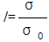
이며 σ 는 혼합 도중의 혼합분산, σ 0 는 혼합 전의 최초의 혼합분산이다.)- 혼합 초기 : 0, 혼합 도중 : 0 에서 1 사이의 값, 완전 혼합 : 1
- 혼합 초기 : 1, 혼합 도중 : 0 에서 1 사이의 값, 완전 혼합 : 0
- 혼합 초기와 혼합 도중 : 0 에서 1 사이의 값, 완전 혼합 : 1
- 혼합 초기와 혼합 도중 : 0 에서 1 사이의 값, 완전혼합 : 0
(정답률: 알수없음)
48. 관을 통한 유체의 흐름에 있어서 경계층의 분리가 일어나는 상태에서 발생하는 마찰현상을 나타내는 용어는?
- 표면마찰 (skin friction)
- 두손실 (head loss)
- 자유난류 (free turbulent)
- 형태마찰 (form friction)
(정답률: 알수없음)
49. 공비 혼합물의 성질이 아닌 것은?
- 최고 및 최저 비점을 가진다.
- 상대 휘발도가 1 이다.
- 정비점 혼합물이라고 한다.
- 증류에 의하여 분리된다.
(정답률: 알수없음)
50. Reynolds 수의 물리적 의미는?
- 관성력과 점성력과의 비이다.
- 항력과 점성력과의 비이다.
- 중력과 점성력과의 비이다.
- 부력과 점성력과의 비이다.
(정답률: 알수없음)
51. 열복사현상의 일종인 온실효과에 대한 설명으로 옳지 않은 것은?
- 대기 중의 CO2 또는 H2O에 의해서도 발생될 수 있다.
- 긴 파장의 복사선은 유리와 같은 매개체를 쉽게 통과할 수 있다.
- 물체는 낮은 온도에서 긴 파장의 복사선을 방출한다.
- 온도에 따라 방출되는 복사선의 파장 차에 의해 나타나는 현상이다.
(정답률: 알수없음)
52. 복사 에너지를 증가시킬 수 있는 방법으로 옳지 않은 것은?
- 온도를 고온으로 한다.
- 복사 면적을 크게 한다.
- 흑체에 가까운 물질을 만든다.
- 표면을 광택있게 한다.
(정답률: 알수없음)
53. 건조 조작에 있어서 건조량을 결정하는데 가장 중요한 인자는?
- 평형 함수량(Equilibrium Moisture)
- 결합 수분(Bound Water)
- 비결합 수분(Unbound Water)
- 자유 수분(Free Moisture)
(정답률: 알수없음)
54. 길고 곧은 관내를 흐르는 유체가 난류흐름일 때 유체와 관벽 사이에서의 열전달에 대한 차원해석을 통하여 무차원 관계식이 얻어진다. 이 관계식에 포함되지 않는 무차원군은?
- 그레즈수(NGr)
- 프란틀수(NPr)
- 레이놀즈수(NRe)
- 누셀수(NNu)
(정답률: 알수없음)
55. 70℃, 1atm 에서 에탄올과 메탄올의 혼합물이 액상과 기상이 평형을 이루고 있을 때 기상의 에탄올의 몰분율은? (단, 이 혼합물은 이상용액으로 가정하며 70℃에서 순수한 에탄올과 메탄올의 증기압은 각각 543, 857 ㎜Hg이다)
- 0.12
- 0.31
- 0.62
- 0.75
(정답률: 알수없음)
56. 0.5㎉/hrㆍmㆍ℃ 의 열전전도를 가진 25㎝ 두께의 벽돌로 만들어진 가열로의 내벽 온도가 800℃, 외벽 온도가 50℃ 일때 단위면적 m2 당 열손실은 몇 ㎉/hrㆍm2 인가?
- 4,500
- 2,500
- 1,500
- 750
(정답률: 알수없음)
57. 습도를 측정하는 방법으로 옳지 않은 것은?
- 노점(dew point)측정
- 건.습구온도 측정
- 용적 변화 측정(습윤기체 흡수액에서)
- 습윤기체의 비열 측정
(정답률: 알수없음)
58. 유량측정기구 중 부자 또는 부표(float)라고 하는 부품에 의해 유량을 측정하는 기구는?
- 로타미터 (rotameter)
- 벤투리미터 (venturi meter)
- 오리피스미터 (orifice meter)
- 초음파유량계 (ultrasonic meter)
(정답률: 알수없음)
59. 다성분계의 기액평형에서 분배계수(distribution coefficient)가 1.20 이고, 액성조성이 0.2 였다면 기상에서의 평형조성은?
- 0.16
- 0.24
- 6
- 1
(정답률: 알수없음)
60. 유체가 관내를 층류로 흐르고 있다. Reynolds 수가 1000인 경우 직관에 의한 마찰손실을 계산할 때 사용되는 Fanning 식의 마찰계수 f의 값은?
- 0.012
- 0.016
- 0.020
- 0.024
(정답률: 알수없음)
4과목: 반응공학
61. 반응물 A 와 B 가 반응하여 목적하는 생성물 R 과 그 밖의 생성물이 생긴다. 다음과 같은 반응식
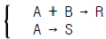
에 대해서 생성물 R 의 생성을 높히기 위한 반응물 농도의 조건은?- CB 를 크게 한다.
- CA 를 크게 한다.
- CA, CB 둘 다 상관 없다.
- CB 를 작게 한다.
(정답률: 알수없음)
62. 반응속도 상수에 대한 식 d(ln k)/dt = (mRT + E)/RT2 에서 m=1/2인 경우는?
- 충돌이론
- 전이상태이론
- Arrhenius식
- 기체분자운동론
(정답률: 알수없음)
63. 촉매반응기구에 대한 설명으로 옳지 않은 것은?
- 기체분자가 촉매 표면에 흡착된다.
- 촉매독에 따른 활성점 농도는 일정하다.
- 활성점에는 점유와 공백활성점이 있다.
- 활성점에서 반응이 일어나 생성물이 나타난다.
(정답률: 알수없음)
64.
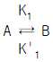
의 촉매 반응이 일어날 때 Langmuir 이론에 의한 A 의 흡착 반응 속도식은? (단, γA:흡착속도, K1,K' 각 경로에서 흡착속도 상수 θ :흡착분율, PA:A성분의 부분압)- γA = k1PAθAθB - k'1θB
- γA = k1PAθA(rθB) - k'1θA
- γA = k1PA(1-θA-θB) - k'1θA
- γA = k1PA(1-θA) - k'1θB
(정답률: 알수없음)
65. 어떤 물질의 분해반응은 1차 반응으로 99% 까지 분해하는 데 6646 초가 소요되었다고 한다면, 33% 까지 분해하는데 몇 초가 걸리겠는가?
- 1000초
- 1210초
- 580초
- 2215초
(정답률: 알수없음)
66. 부피 100ℓ 이고 space time 5min 인 mixed flow reactor에 대한 다음 설명 중 옳은 것은?
- 이 반응기는 1분에 20ℓ의 반응물을 처리할 능력이 있다.
- 이 반응기는 1분에 0.2ℓ의 반응물을 처리할 능력이 있다.
- 이 반응기는 1분에 5ℓ의 반응물을 처리할 능력이 있다.
- 이 반응기는 1분에 100ℓ의 반응물을 처리할 능력이 있다.
(정답률: 알수없음)
67. 다음 반응에 대해 Cs 를 최대로 하기 위한 최적 온도의 진행으로 옳은 것은? (단, E1 = 10, E2 = 25, E3 = 15, E4 = 10, E5 = 20, E6 = 25, E 는 Activation Energy)
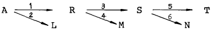
- 저온 - 저온 - 저온
- 저온 - 고온 - 저온
- 고온 - 저온 - 고온
- 고온 - 고온 - 저온
(정답률: 알수없음)
68. 구형연속 조작의 조작점 중 최적점은?
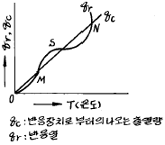
- M 점
- N 점
- 최적점은 없다.
- S 점
(정답률: 알수없음)
69. 그림 A,B,C 는 mixed flow reactor 와 plug flow reactor을 각각 다르게 연결한 것이다. 1 차 이상의 반응에서 그림 A 에서의 생성물의 양을 X1 로 하고 그림 B 에서의 생성물의 양을 X2 로 하며, 그림 C 에서의 생성물의 양을 X3로 하였을 때 옳은 것은?
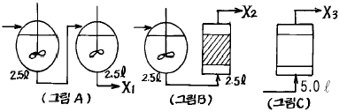
- X1 ＜ X3 ＜ X2
- X2 ＜ X1 ＜ X3
- X1 ＜ X2 ＜ X3
- X3 ＜ X1 ＜ X2
(정답률: 알수없음)
70. 반응속도 상수 k 의 단위는?
- (㏖/cm3)-1(sec)
- (㏖/cm3)n(sec)-1
- (㏖/cm3)1-n(sec)-1
- (㏖/cm3)n(sec)
(정답률: 알수없음)
71. 이상적 혼합 반응기(ideal mixed flow reactor)에 대한 설명으로 옳지 않은 것은?
- 반응기 내의 농도와 출구의 농도가 같다.
- 무한개의 이상적 혼합 반응기를 직렬로 연결하면 이상적 관형 반응기(plug flow reactor)가 된다.
- 1 차 반응에서의 전환율은 이상적 관형 반응기보다 혼합 반응기가 항상 못하다.
- 회분식 반응기(batch reactor)와 같은 특성을 나타낸다.
(정답률: 알수없음)
72. 에탄이 273℃ 에서 열분해 할 때의 활성화 에너지는 7500cal 이다. 546℃ 에서 열분해 할 때는 273℃ 에서 열분해 할 때 보다 몇 배 더 빠르겠는가?
- 2.3
- 5.0
- 7.5
- 10.0
(정답률: 알수없음)
73. 반응기에 유입되는 물질량의 체류시간에 대한 설명으로 옳지 않은 것은?
- 반응물의 부피가 변하면 체류시간이 변한다.
- 반응흐름이 실제흐름이면 체류시간이 달라진다.
- 액상반응이면 공간시간과 체류시간이 같다.
- 기상반응이면 공간시간과 체류시간이 같다.
(정답률: 알수없음)
74. plug flow reactor 속에서 phosphine 의 균일 기상 분해반응 4PH3(g) → P4(g) + 6H2 의 1200℉ 에서의 속도식은 -rPH3 = 10(1/hr)CPH3 이다. 순수한 phosphine 4 Lb mole/hr 인 원료 공급에 대하여 80 % 전화를 일으킬 수 있는 반응기의 크기는? (단,이 때의 압력은 4.6atm 이다)
- 233.6ℓ
- 233.6ft3
- 85.2ℓ
- 85.2ft3
(정답률: 알수없음)
75. 다음 각 그림의 빗금친 부분의 넓이 가운데 플러그 반응기의 공간시간 τ p를 나타내는 것은? (단, 밀도 변화가 없는 반응이다.)
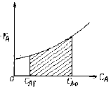
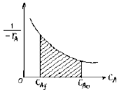
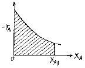
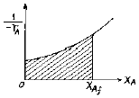
(정답률: 알수없음)
76. 크기가 다른 두 혼합 흐름 반응기를 직렬로 연결한 반응기에 대한 설명으로 옳지 않은 것은? (단, n 는 반응차수를 의미한다.)
- n > 1 인 반응에서는 작은 반응기가 먼저 와야 한다.
- n < 1 인 반응에서는 큰 반응기가 먼저 와야 한다.
- 두 반응기의 최적 크기 비는 반응속도와 전화율에 따른다.
- 특수한 경우 1 차 반응에서는 다른 크기의 반응기가 이상적이다.
(정답률: 알수없음)
77. Space time 이 1.62 분이고 CAo = 4㏖/ℓ 이며 원료 공급이 1분에 1000 ㏖ 로 공급되는 흐름 반응기의 최소 체적은?(오류 신고가 접수된 문제입니다. 반드시 정답과 해설을 확인하시기 바랍니다.)
- 1⑤ℓ
- 2⑤ℓ
- 3⑤ℓ
- 4⑤ℓ
(정답률: 알수없음)
78. A → R → S (k1, k2) 인 반응에서 k1 = 1, k2 = 100 이면(CS/CA0)는?
- e-t
- e-100t
- 1 - e-t
- 1 - e-100t
(정답률: 알수없음)
79. 다음과 같은 반응에서 k1 = k2 = 1 sec-1 이다. p 의 농도 CP 가 최대로 되는 시간은 얼마인가?
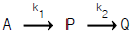
- 1초
- 2초
- 3초
- 4초
(정답률: 알수없음)
80. 비가역 0 차 반응에서 반응이 완결되는데 필요한 반응 시간은?(오류 신고가 접수된 문제입니다. 반드시 정답과 해설을 확인하시기 바랍니다.)
- 초기 농도의 역수와 같다.
- 속도 정수, k 의 역수와 같다.
- 초기 농도를 속도 정수로 나눈 값과 같다.
- 초기 농도에 속도 정수를 곱한 값과 같다.
(정답률: 알수없음)
5과목: 공정제어
81. 개회로 전달함수
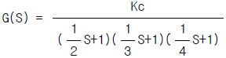
이면 근궤적의 분기점은?- -4.53
- -2.89
- -4.98
- -2.42
(정답률: 알수없음)
82. 다음 그림과 같은 나이퀴스트 선도(Nyquist diagram)로 부터 계의 안정도를 판별하면 어느 것인가?
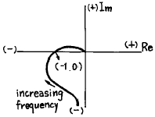
- Stable
- Conditionally Stable
- Unstable
- not Known
(정답률: 알수없음)
83. 다음 블록선도로부터 레귤레이터 문제(Regulator problem)에 대한 총괄전달함수는?
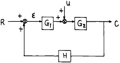
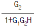
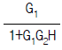
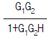
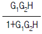
(정답률: 알수없음)
84. PID 제어기에서 제어기 이득이 증가할 경우의 제어계의 응답특성은?
- 오프셋이 늘어난다.
- 폐루프 응답이 빨라진다.
- 제어기 입력에 대한 제어기 출력이 작아진다.
- 공정에서의 시간지연이 줄어든다.
(정답률: 알수없음)
85. 위치의 시간변화 및 운항장치 등에 주로 사용되는 제어기구는 어느 것인가?
- Servo 제어기구
- Regulator 제어기구
- Automatic 제어기구
- Load 제어기구
(정답률: 알수없음)
86. 라플라스 변환의 주요 목적은?
- 비선형 대수방정식을 선형 대수방정식으로 변환
- 비선형 미분방정식을 선형 미분방정식으로 변환
- 선형 미분방정식을 대수방정식으로 변환
- 비선형 미분방정식을 대수방정식으로 변환
(정답률: 알수없음)
87. 전달함수가
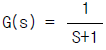
인 계의 대역폭(Band Width)은?- 0
- 1
- √2
- 2
(정답률: 알수없음)
88. 다음 중 가능한 한 커야 하는 계측기의 특성은?
- 시간상수(time constant)
- 감도(sensitivity)
- 응답시간(response time)
- 수송지연(transportation lag)
(정답률: 알수없음)
89. 어떤 제어밸브를 통하여 흐르는 유체의 유속은 밸브 압력이 3psig에서 15psig까지 변할때 0(ft3/min)에서 2(ft3/min)까지 변한다면 이 밸브의 감도(sensitivity)는?
- 3/12
- 2/15
- 2/3
- 1/6
(정답률: 알수없음)
90. 제어계의 안정성을 판별하는 방법은?
- 매케이브 - 틸레법(Mecabe - Thiele method)
- 아인슈타인법
- 길리란드법(Gilliland method)
- 나이퀴스트법(Nyguist method)
(정답률: 알수없음)
91. 단면적이 A인 어떤 탱크가 있다. 수면으로 부터 h 만큼 떨어진 탱크의 측부분에 오리피스 구멍을 만들었다. 이 오리피스를 통해 나오는 유체의 유량은?
- h에 비례한다.
 에 비례한다.
에 비례한다.- h2에 비례한다.
 에 비례한다.
에 비례한다.
(정답률: 알수없음)
92. 미달감쇄 2차계(Under Damped 2nd Order System)에서 오우버슈우트는?
- 시간정수와 감쇄인자의 함수이다.
- 감쇄인자만의 함수이다.
- 시간정수만의 함수이다.
- 감쇄인자와는 상관없다.
(정답률: 알수없음)
93. 1차계의 경우 Corner 주파수에서의 AR (amplitude ratio)는?
- √2
- 1
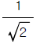
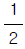
(정답률: 알수없음)
94. 전폐와 전개의 제어 형식으로 인하여 제어 결과가 cycling이 나타나는 제어기는?(오류 신고가 접수된 문제입니다. 반드시 정답과 해설을 확인하시기 바랍니다.)
- 비례 제어기
- 비례-미분 제어기
- 비례-적분 제어기
- on-off 제어기
(정답률: 알수없음)
95. 그림에서와 같이 원통형 물 저장탱크가 q(t)=20[m3/hr], h=4m로 정상상태에 있다. 그런데 t=0 이후부터 물을 25[m3/hr]로 증가시켜 넣었을 때 시간에 따른 높이의 변화식 h(t)는? [단, 배출유량(qo)과 탱크수위 높이(h)간의 관계식은 qo = K√h (K=상수)이다.]
(정답률: 알수없음)
96. 의 시간함수는?
- f(t) = e-t - 2e-2t
- f(t) = e-t + e-2t
- f(t) = e-t - e-2t
- f(t) = e-t + 2e-2t
(정답률: 알수없음)
97. f(t) = e-tsin 2t일때 Laplace transform f(s)는?
(정답률: 알수없음)
98. 수송래그(Transportation Lag)의 전달함수는 다음 중 어떤 것인가? (단, τ 는 제어계의 시간정수 이다.)
- G(s)=e-τs
(정답률: 알수없음)
99. 다음 중 비례미분 제어기의 전달함수를 나타낸 것은? (단,τb = 2,τI = 3,Kc = 0.5)
(정답률: 알수없음)
100. 다음 그림은 두개의 탱크로 이루어진 액위 시스템을 보인 것이다. qi(t), q2(t)의 라플라스 변환을 각각 Qi(s), Q2(s)라고 할 때 는 어떤 관계로 주어지는가? (단,R1과 R2는 저항을 나타내며 A1과 A2는 단면적이다.)
(정답률: 알수없음)
6과목: 화학공업개론
101. 반도체공정 중 감광되지 않은 부분을 선택적으로 제거하는 공정을 무엇이라하는가?
- 조립
- 에칭
- 박막형성
- 이온주입
(정답률: 알수없음)
102. 이온전도성 산화물을 전해질로 이용하여 고온으로 운전하는 연료전지(fuel cell)는?
- Phosphoric acid fuel cell
- Solid oxide fuel cell
- Molten carbonate fuel cell
- Solid polymer fuel cell
(정답률: 알수없음)
103. 공업적 접촉개질 프로세스중 MoO3 - Al2O3계 촉매를 사용하는 것은?
- Platforming
- Houdriforming
- Ultraforming
- Hydroforming
(정답률: 알수없음)
104. 분자량이 1.0× 104 g/mol인 고분자 100g과 분자량 2.5×104 g/mol인 고분자 50g, 그리고 분자량 1.0× 105 g/mol인 고분자 50g이 혼합되어 있다. 이 고분자물질의 수평균 분자량은?
- 16,000
- 28,500
- 36,250
- 57,000
(정답률: 알수없음)
1⑤. 순도가 90%인 황산암모늄이 100kg이 있다. 이 중 질소의 함량은 백분율로 몇 kg이 되는가? (단, 황산암모늄의 MW=132, 질소의 MW=28 이다.)
- 9.1
- 10.2
- 19.1
- 26.4
(정답률: 알수없음)
106. 이온교환에의해 수처리할때 그 설명이 잘못된 것은?
- 양이온 교환에는 슬폰기를 교환기로 갖는 R-SO3+H+형의 수지를 사용한다.
- 양이온 교환수지는 Na+, Ca2+,를 흡착하여 H+를 방출 한다.
- 음이온 교환수지를 재생 할때는 산으로 세정한다.
- 이온교환은 이온교환수지를 충진한 탑을 통과시켜서 각종 이온을 흡착 제거하는 것이다.
(정답률: 알수없음)
107. 석유의 주성분은 탄화수소로 되어 있으나 산지에 따라 차이가 있다. 탄화수소 이외에 다음에서 가장 많이 불순물로 존재하여 공해문제로 등장되는 것은?
- 산소 화합물
- 질소 화합물
- 황 화합물
- 금속 화합물
(정답률: 알수없음)
108. 다음의 질소질 비료중 흡습성이 강하고 논농사에는 부적합한 비료는?
- NH4Cl
- NH4NO3
- NH2CONH2
- (NH4)2SO4
(정답률: 알수없음)
109. 가성소오다 제조때 격막식 전해조의 양극재료는?
- 수은
- 철
- 흑연
- 구리
(정답률: 알수없음)
110. 반도체 제조과정중에서 식각공정후 행해지는 세정공정에 사용되는 piranha 용액은?
- NH4OH + HF + H2O
- HCl + HF + H2O
- NH4OH + H2O2 + H2O
- HCl + H2O2 + H2O
(정답률: 알수없음)
111. 일반적으로 알코올에 염화슬폰산을 작용시켰을때 얻어지는 최종적 주생성물은?
- R - SO3H
- R - OSO2OH
- R - Cl
- R - SO2Cl
(정답률: 알수없음)
112. 방향족 아민에 정확히 1당량의 황산을 가했을 때의 생성물은?
(정답률: 알수없음)
113. 건식법에 의한 인산제조공정에 대한 설명 중 맞는 것은?
- 인의 농도가 낮은 인광석을 원료로 사용할 수 있다.
- P2O5 85%정도의 고농도 인산은 제조할 수 없다.
- 전기로에서 인의 기화와 산화가 동시에 일어난다.
- 대표적인 건식법은 이수석고법이다.
(정답률: 알수없음)
114. 하루8ton의 염소 가스를 생산하는 공장이 있다. 이 공장에서 하루동안 얻어지는 NaOH의 량은 몇 ton인가? (단, Na = 23, Cl = 35.5, O = 16, H = 1)
- 5.5ton
- 7.8ton
- 9.0ton
- 14.3ton
(정답률: 알수없음)
115. 다음중 석유류중의 불순물(황,질소,산소)제거에 사용되는 방법은?
- Hydroforming process
- Visbreaking process
- Hydrotreating process
- Platforming process
(정답률: 알수없음)
116. 다음 중 슬폰산화가 되기 쉬운 것은?
- RH
(정답률: 알수없음)
117. 다음 중 다니엘 전지의 부극(-)에서 일어나는 반응은?
- Zn→Zn2++2e-
- Cu2+2e-→Cu
- H2→2H++2e-
(정답률: 알수없음)
118. 양이온 중합에 사용되는 개시제(촉매)는?
- 수소산
- 알칼리 금속
- 알핀 촉매
- 과산화물
(정답률: 알수없음)
119. 나트륨 이용율을 높이고,폐기되는 염소의 효율적 이용등에 착안하여 소오다회와 염화암모늄을 동시에 생산하는 제조방법은?
- Le Blanc법
- Sesqui 탄산소오다법
- 염안 소오다법
- 액안 소오다법
(정답률: 알수없음)
120. Solvay법(암모니아 소다법)에서 암모니아를 회수하기 위해서 사용되는 것은?
- Ca(OH)2
- Ca(NO3)2
- NaHSO4
- NaHCO3
(정답률: 알수없음)
따라서, A에서 열을 받고 B에서 가열과정을 거쳐 T2보다 높은 온도인 C로 이동한다. 그 후, C에서 열을 방출하면서 F까지 이동하고, F에서 냉각과정을 거쳐 다시 A로 돌아온다.
따라서, 정답은 "A - B - C - F - A" 이다.